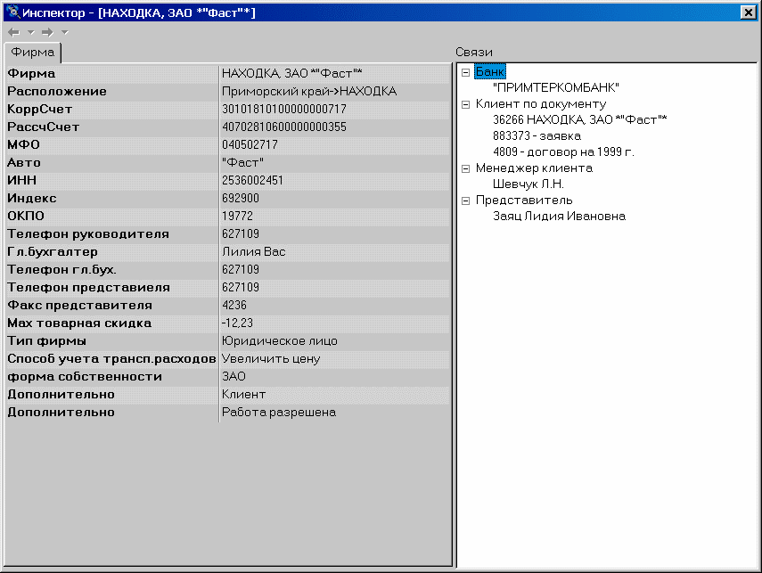

БД – хранилище объектов (статья)
Классической методикой проектирования БД является создание отдельной таблицы для каждой описываемой моделью данных сущности, затем, в процессе нормализации – выделение отдельных таблиц для хранения атрибутов сущности (таблицы-справочники). Такой подход хорошо работает для БД с относительно небольшим количеством описываемых объектов (десятки) и при несложных и статичных связях между ними. Однако, любое изменение структуры хранимых данных приводит к внесению изменений в структуру таблиц, эти данные отображающих. Несложная на этапе разработки, эта операция становится крайне проблематичной при больших объемах данных и отсутствии у разработчика непосредственного доступа к БД (например, если она стоит у заказчика). Многим, наверное, знакомы громоздкие, медленные и требующие огромного дискового пространства операции по конвертированию БД при переходе на новую версию продукта. Не менее неприятна работа с БД, исторически разросшейся до сотен таблиц, структуру которой сложно даже изобразить в читабельном виде. В связи с этим встает вопрос – а нельзя ли создать структуру данных, не требующую переделок при появлении новых сущностей, позволяющую хранить произвольную информацию и при этом достаточно простую и эффективную? Чудес, увы, не бывает. Любая универсальная система менее эффективна, чем специализированная. Однако, возможно создание решения, сочетающего приемлемую производительность и простоту с достаточной степенью универсальности.
Базовые тезисыПрежде чем продолжать, необходимо сформулировать основные принципы, на которых будет строиться проектируемая БД.
| 1. | Каждая сущность, информация о которой хранится в БД – это объект |
| 2. | Каждый объект уникален в пределах БД и имеет уникальный идентификатор. |
| 3. | Объект имеет свойства (строковые, числовые, временные, перечислимые), которые описывают атрибуты сущности. |
| 4. | Объекты могут быть связаны между собой произвольным образом. Связь характеризуется связанными объектами и типом связи. Например, сотрудник фирмы может быть связан с отделом, в котором он работает связью типа «сотрудник в отделе» и т.п. Связь в некотором роде аналогична понятию ссылки на таблицу-справочник в традиционной модели БД. |
| 5. | Объект может быть хранилищем. В этом случае допускается хранение на нем других объектов (например, товара на складе). |
Объект в нашей БД – это скорее логическое понятие, его главное назначение – предоставить уникальный идентификатор, по которому он будет отличаться. Кроме этого, каждый объект обладает типом. Типы описываются таблицей:
ObjType Id INTEGER Первичный ключ Code CHAR(10) NOT NULL UNIQUE Краткое название типа. Используется в программе для поиска объектов данного типа ItemName CHAR(30) Полное название типа, используется только для интерфейса.Типами объектов может быть, например «Фирма», «Сотрудник», «Товар»
Для упрощения не будем реализовывать наследования, отмечу лишь, что для этого необходимо ввести в ObjType поле ParentId, ссылающееся на Id наследника.
Сами объекты хранятся в таблице
Objects Id INTEGER Первичный ключ TypeId INTEGER REFERENCES ObjType(Id) Ссылка на тип объекта ItemName CHAR(50) Название объектаПоле Objects.ItemName заслуживает отдельного обсуждения. В этом поле хранится строка, описывающая объект и (часто) дублирующая одно из его свойств, либо формируемая как сочетание нескольких свойств (например, номер и дата договора, фамилия и инициалы человека). Такой подход приводит к известному дублированию информации и потенциальным аномалиям обновления. Однако, при работе через сервер приложений формирование этого поля реализуется очень просто, а при выводе в интерфейсе списков объектов получение наименования из этого поля существенно повышает общее быстродействие базы данных. В то же время, в системах, где преимущественно производится ввод информации и мало операций по её выборке можно отказаться от него, что позволит уменьшить накладные затраты на его формирование и обновление.
Таким образом, мы получаем возможность, хранить объекты произвольного количества типов. Выборка объектов конкретного типа производится запросом вида
SELECT O.Id, O.ItemName, OT.ItemName FROM Objects O INNER JOIN ObjType OT ON O.TypeId = OT.Id WHERE OT.Code = 'EMPLOYEE'
Однако, наименования явно недостаточно для описания произвольного объекта из реального мира. Поэтому дополним создаваемую БД группой таблиц для описания свойств объектов.
СвойстваСвойства объектов отражают реальные атрибуты описываемых ими сущностей. Все они принадлежат к какому-то объекту и содержат некую информацию об атрибуте и его величине, причем список атрибутов общий для всех объектов одного и того же типа.
Величина же может выражаться данными различного типа. Будем хранить в БД атрибуты следующих типов:
| • | Строковые |
| • | Числовые. Различия между целыми и вещественными числами делать не будем, полагая целые подмножеством вещественных. Если задача диктует невозможность применения данного подхода – придется выделять эти атрибуты в различные типы |
| • | Исторические (дата и время) |
| • | Перечислимые (например, форма собственности фирмы) |
Для описания атрибутов заведем таблицу
StrDesc Id INTEGER Первичный ключ TypeId INTEGER REFERENCES ObjType(Id) Ссылка на тип объекта Code CHAR(10) Краткое название параметра ItemName CHAR(30) Полное название параметра, используется только для интерфейса.При настройке БД, для каждого типа объектов задается набор свойств данного типа. Так, например, объект типа «EMPLOYEE» (Сотрудник) может иметь строковые свойства:
«FAMILY» - фамилия «FIRSTNAME» - имя «LASTNAME» - отчество «ADDRESS» - адрес «EMAIL» - адрес электронной почтыПоле Objects.ItemName для сотрудников заполняется сервером приложений как комбинация из атрибутов FAMILY + FIRSTNAME + LASTNAME
Сами атрибуты хранятся в таблице
Strings Id INTEGER Первичный ключ TypeId INTEGER REFERENCES StrDesc(Id) Ссылка на тип параметра ObjectId INTEGER REFERENCES Objects(Id) Ссылка на объект Value VARCHAR(255) Значение параметраЧтобы получить список сотрудников, имеющих E-Mail можно использовать запрос:
SELECT O.ItemName, S.Value FROM Objects O INNER JOIN ObjType OT ON O.TypeId = OT.Id INNER JOIN Strings S ON O.Id = S.ObjectId INNER JOIN StrDesc SD ON S.TypeId = SD.Id WHERE OT.Code = 'EMPLOYEE' AND SD.TypeId = OT.Id AND SD.Code = 'EMAIL'
Для получения списка всех сотрудников, с указанием адресов электронной почты для тех, у кого они есть запрос надо модифицировать:
SELECT O.ItemName, S.Value FROM Objects O INNER JOIN ObjType OT ON O.TypeId = OT.Id LEFT JOIN Strings S ON O.Id = S.ObjectId LEFT JOIN StrDesc SD ON S.TypeId = SD.Id WHERE OT.Code = 'EMPLOYEE' AND SD.TypeId = OT.Id AND SD.Code = 'EMAIL'
Интересный эффект можно получить, создав у различных типов объектов атрибуты с одинаковыми значениями поля Code. Предположим, что у объектов типов EMPLOYEE (сотрудник) и FIRM (организация) есть строковые атрибуты с одинаковым именем 'EMAIL'. Тогда можно одним запросом получить адресную книгу по всем известным в БД почтовым адресам.
SELECT O.ItemName, OT.ItemName, S.Value FROM Objects O INNER JOIN ObjType OT ON O.TypeId = OT.Id INNER JOIN Strings S ON O.Id = S.ObjectId INNER JOIN StrDesc SD ON S.TypeId = SD.Id WHERE SD.Code = 'EMAIL' ORDER BY OT.ItemName, O.ItemName
Если впоследствии добавится еще какой-то объект, имеющий аналогичный атрибут – его наличие будет немедленно учтено и он появится в списке без каких-либо модификаций БД и запросов. Добиться подобного результата в БД с традиционной структурой будет, как минимум, сложно.
Числовые атрибутыДля простоты будем предполагать, что для хранения любых числовых атрибутов достаточно одного типа данных, например DECIMAL(20,4). В серверах, поддерживающих тип MONEY удобно реализовывать хранение на базе этого типа. Если же логика БД требует выделения отдельного целого, либо другого типа данных – можно сделать это путем выделения для него отдельной группы таблиц. В остальном, хранение значений этого типа аналогично строковым. Описание атрибутов хранится в таблице:
PropDesc Id INTEGER Первичный ключ TypeId INTEGER REFERENCES ObjType(Id) Ссылка на тип объекта Code CHAR(10) Краткое название параметра ItemName CHAR(30) Полное название параметра, используется только для интерфейса.А сами атрибуты – в таблице:
Properties Id INTEGER Первичный ключ TypeId INTEGER REFERENCES PropDesc(Id) Ссылка на тип параметра ObjectId INTEGER REFERENCES Objects(Id) Ссылка на объект Value DECIMAL(20,4) Значение параметра. На серверах, поддерживающих тип данных MONEY (аналог Currency в Delphi), удобно использовать этот тип.При необходимости возможно дополнение таблицы PropDesc дополнительными полями, задающими минимальное и максимальное значение атрибута, значение по умолчанию и т.п. Проверка корректности этих значений может осуществляться в триггере на изменение таблицы Properties
Исторические атрибутыМногие объекты в процессе своей «жизни» изменяют своё состояние. Так, сотрудник может быть принят на работу, уволен, снова принят, товар оприходован и продан и т.д. Для описания состояний объекта служит таблица:
Status Id INTEGER Первичный ключ TypeId INTEGER REFERENCES ObjType(Id) Ссылка на тип объекта Code CHAR(10) Краткое название состояния ItemName CHAR(30) Полное название состояния, используется только для интерфейса.Например, для человека допустимые состояния могут включать:
«WASBORN» - Дата рождения «EMPLOYEED» - Принят на работу «DISMISS» - УволенПри этом, возможно реализовать логику, когда любое состояние может возникать многократно, например человек может быть принят, уволен, потом опять принят и т.п.
Сама история состояний хранится в таблице:
History Id INTEGER Первичный ключ StatusId INTEGER REFERENCES Status(Id) Ссылка на тип состояния ObjectId INTEGER REFERENCES Objects(Id) Ссылка на объект ItemDate DATETIME Дата возникновения состоянияПри изменении состояния объекта в History добавляется запись со ссылкой на это состояние и датой его возникновения. Например, при увольнении сотрудника, в его историю состояний добавляется запись с датой увольнения и ссылкой на состояние «DISMISS». Если этот же человек снова принят на работу – достаточно добавить новую запись с датой приема и ссылкой на состояние «EMPLOYEED». Список сотрудников, числящихся на работе на любую интересующую дату, может быть получен запросом вида:
SELECT O.ItemName, H.ItemDate AS Employeed
FROM Objects O
INNER JOIN ObjType OT ON O.TypeId = OT.Id
INNER JOIN History H ON H.ObjectId = O.Id
INNER JOIN Status S ON H.StatusId = S.Id
WHERE OT.Code = 'EMPLOYEE'
AND S.Code = 'EMPLOYEED'
AND H.ItemDate = (SELECT MAX(H1.ItemDate)
FROM History H1
INNER JOIN Status S1 ON H1.StatusId = S1.Id
WHERE H1.ObjectId = O.Id
AND H.ItemDate <= :DateParam
AND S1.Code IN ('EMPLOYEED', 'DISMISS'))
Перечислимые атрибуты
Последним видом атрибутов будут перечислимые типы, которые могут принимать одно из заранее заданного набора значений. Для этих данных нам понадобится не две, как для остальных, а три таблицы. Первая из них задаёт, какие перечисления допустимы для выбранного типа объекта:
EnumDesc Id INTEGER Первичный ключ TypeId INTEGER REFERENCES ObjType(Id) Ссылка на тип объекта Code CHAR(10) Краткое название состояния ItemName CHAR(30) Полное название состояния, используется только для интерфейса.Вторая – определяет возможные значения для перечислимого типа:
EnumValues Id INTEGER Первичный ключ DescId INTEGER REFERENCES EnumDesc(Id) Ссылка на тип перечисления Code CHAR(10) Краткое название значения ItemName CHAR(30) Полное название значения, используется только для интерфейса.И третья – непосредственно хранит значения, связанные с объектом:
Enums Id INTEGER Первичный ключ ValueId INTEGER REFERENCES EnumValues(Id) Ссылка на значение ObjectId INTEGER REFERENCES Objects(Id) Ссылка на объектТипичным примером использования этого типа данных является форма собственности фирмы. Для её определения необходимо вставить в EnumDesc строку
TypeId Code ItemName Ссылка на ObjType для типа «FIRM» OWNERFORM Форма собственностиИ в EnumValues:
DescId Code ItemName Ссылка на EnumDesc для ИЧП Индивидуальное частное предприятие типа «OWNERFORM» ООО Общество с ограниченной ответственностью ...Таким образом, мы получили возможность описать произвольный набор свойств любой сущности, данные о которой хранятся в БД и отобразить её на единообразно хранимые объекты. Однако, на настоящий момент, база данных еще не пригодна для решения сколько-либо сложных задач, поскольку реальные объекты любой предметной области имеют разнообразные связи друг с другом, которые еще не может отразить наша БД.
СвязиСущности реального мира имеют между собой множество различных связей, определяющих их роль и место в этом мире. В традиционной методологии построения БД связи отображаются на ссылки (REFERENCES) между таблицами, в которых хранится описание соответствующих сущностей. Такой подход обеспечивает высокую эффективность БД и возможность автоматической проверки и поддержания целостности связей (механизмы referential integrity), однако жестко ограничивает связи, хранимые в БД её структурой. В нашей структуре данных не предусмотрено отдельных полей для хранения ссылок на другие таблицы. Вместо них в БД вводятся дополнительные таблицы.
Первая из них описывает возможные типы связей, которые могут быть установлены между объектами
LinkType Id INTEGER Первичный ключ Code CHAR(10) Краткое название связи ItemName CHAR(30) Полное название связи, используется только для интерфейса.Например, сотрудник может быть связан с отделом, в котором он работает связью типа «EMPDEPART» (сотрудник в отделе). В то же время он может быть связан с отделом связью «BOSS» (начальник отдела). Со сторонней фирмой сотрудник может быть связан как менеджер, а с документом – как его создатель. Сами связи хранятся в таблице:
Links Id INTEGER Первичный ключ ParentId INTEGER REFERENCES Objects(Id) Ссылка на первый из связываемых объектов ChildId INTEGER REFERENCES Objects(Id) Ссылка на второй из связываемых объектов TypeId INTEGER REFERENCES LinkType(Id) Ссылка на тип связи.Таким образом, чтобы получить менеджера, прикрепленного к фирме необходимо выполнить запрос:
SELECT O.ItemName FROM Objects O INNER JOIN Links L ON O.Id = L.ParentId INNER JOIN LinkType LT ON LT.Id = L.TypeId WHERE LT.Code = 'MANAGER' AND L.ChildId = :FirmId -- Первичный ключ объекта-фирмы А всех сотрудников отдела поставок можно получить запросом: SELECT Employee.ItemName FROM Objects Employee INNER JOIN Links L ON L.ChildId = Employee.Id INNER JOIN LinkType LT ON L.TypeId = LT.Id INNER JOIN Objects Departments ON L.ParentId = Departments.Id INNER JOIN ObjType OT ON Departments.TypeId = OT.Id WHERE OT.Code = 'DEPARTMENT' AND LT.Code = 'EMPDEPART' AND Department.ItemName = 'Отдел поставок'
Опытные разработчики, видимо уже заметили слабость предлагаемой схемы – связи никак не контролируются и ничто не гарантирует, что "сотрудником" отдела не окажется счет-фактура. Поскольку описание связей между объектами является "сердцем" разрабатываемой БД, необходимо ввести в неё механизм, контролирующий допустимость устанавливаемой связи. Таким механизмом служит таблица допустимых связей:
AllowedLinks Id INTEGER Первичный ключ ParentId INTEGER REFERENCES ObjType(Id) Ссылка на тип первого из связываемых объектов ChildId INTEGER REFERENCES ObjType(Id) Ссылка на тип второго из связываемых объектов TypeId INTEGER REFERENCES LinkType(Id) Ссылка на тип связи.На вставку и изменение записей в Links создается несложный триггер, который проверяет типы объектов для создаваемой связи и их допустимость по AllowedLinks. Так как разрешенные типы связей хранятся в таблице, мы получаем гибкий механизм для настройки БД под требования конкретной задачи. Если требуется задать новый тип связи между объектами – достаточно лишь добавить в AllowedLinks запись с этим типом связи и типами объектов.
Замечу, что предлагаемая модель позволяет легко хранить иерархические данные. Для этого надо лишь задать связь типа "находится в".
Выбирая, какой тип объекта должен быть первым (ParentId), а какой вторым (ChildId) в связи, рекомендуется придерживаться единой системы. Для БД это безразлично, однако для уменьшения путаницы лучше в качестве первого выбирать объект, который бы оказался на стороне «один» отношения «один-ко-многим» при проектировании БД по классической методике. Если объекты связаны по принципу «многие-ко-многим» - надо просто выработать для себя единую методику и в дальнейшем ей следовать.
Расширение БДИтак, полученная БД может хранить описание произвольных сущностей, позволяет динамически определять и устанавливать между ними произвольные связи. Для многих задач (например, отдел кадров) в которых каждый объект уникален этого уже достаточно. Однако, существует много задач, под которые полученное «ядро» неплохо было бы дополнить дополнительными возможностями
Налаживаем учетСуществует большой класс объектов, экземпляры которых с точки зрения учета не отличаются друг от друга. К таким объектам применимо понятие количества. Например, нам безразлично какие конкретно рубли лежат в кассе. Важно лишь знать СКОЛЬКО их там. Подобные объекты широко распространены в задачах учета материальных ценностей. Задачи учета требуют хранения в БД информации о перемещениях материальных ценностей и их остатках. Отметим, что остатки есть расчетная величина, которая может быть легко рассчитана из перемещений. Таким образом, хранение остатков может осуществляться в целях кэширования часто требующейся информации и его методика определяется скорее особенностями реализуемой системы. Часто можно вообще отказаться от него и пересчитывать остатки «на лету», по мере поступления запросов от пользователей.
Для хранения информации о перемещениях заведем таблицу:
Movement Id INTEGER Первичный ключ OperationId INTEGER REFERENCES Objects(Id) Ссылка на объект-операцию, группирующую логически связанные перемещения ContainerId INTEGER REFERENCES Objects(Id) Ссылка на объект-хранилище на который совершается приход, либо с которого совершается расход ContentId INTEGER REFERENCES Objects(Id) Ссылка на объект, который перемещается Amount DECIMAL(20,4) Количество ItemDate DATETIME Дата перемещенияРассмотрим некоторые поля этой таблицы подробнее.
OperationId
Каждая операция может состоять из нескольких перемещений. Например, расход товара со склада и приход его на фирму-покупателя. Чтобы иметь возможность логически связать эти перемещения они группируются в операцию. В то же время операция часто имеет ряд дополнительных атрибутов (менеджер, срок выполнения, тип) и т.п. Поэтому – объявим операцию объектом, и будем хранить информацию о ней наравне с другими объектами БД. Можно завести отдельные типы объектов для различных операций, диктуемых предметной областью. Наша схема позволяет легко определить такие виды операций как:
| • | продажа товара – расход товара со склада, приход денег в кассу, расход денег с фирмы-покупателя, приход товара на фирму-покупатель |
| • | конвертация – расход одной валюты и приход другой (возможно на другой счет) |
| • | производство – расход нескольких товаров со склада материалов и приход одного (или нескольких же) других товаров на склад готовой продукции |
| • | бухгалтерская проводка – дебет одного счета и кредит другого (либо нескольких других) |
Ссылка на объект-хранилище на который приходят, либо с которого уходят материальные ценности. Таким объектом может быть склад, касса, фирма-контрагент и т.п. Хранилище само может выступать как перемещаемый объект – например, гвозди лежат в ящике, а ящик лежит на складе.
AmountПеремещаемое количество. Если Amount > 0 – это приход, иначе - расход
Поскольку все операции однообразно хранятся в одной таблице, появляются богатые возможности по ведению аналитики. Например, остатки денег в кассе на любую дату можно получить несложным запросом
SELECT Sum(Amount) FROM Movement WHERE ContentId = :<Id объекта «рубли»> AND ContainerId = :<Id объекта «касса»> AND ItemDate <= :InterestDate Запрос: SELECT O.Id, O.ItemName, SUM(M.Amount) FROM Movement M INNER JOIN Object O ON M.ContentId = O.Id INNER JOIN ObjType OT ON O.TypeId = OT.Id WHERE OT.Code = 'GOOD' AND M.Amount > 0 AND M.ContainerId = :<Id объекта «склад»> AND M.ItemDate BETWEEN :StartDate AND :EndDate GROUP BY O.Id, O.ItemName
вернет суммы прихода на склад по всем товарам (тип объекта «GOOD») за период от StartDate до EndDate.
Истинная мощь аналитических возможностей становится понятной, если вспомнить о богатых возможностях группировки объектов по связям между ними (Links).
Как и в случае со связями между объектами, желательно иметь механизм, не позволяющий проводить недопустимых с точки зрения бизнес логики операций. Для этого в БД вводится таблица:
AllowedMovement Id INTEGER Первичный ключ ContainerId INTEGER REFERENCES ObjType(Id) Ссылка на тип объекта-хранилища ContentId INTEGER REFERENCES ObjType(Id) Ссылка на тип перемещаемого объектаТриггер на таблицу Movement не допускает создания записей с недопустимыми (т.е. отсутствующими в AllowedMovement) типами объектов.
ЦеныПод ценой мы будем понимать некоторый курс, по которому один объект может быть обменен на другой. Так, ценой может являться курс обмена валюты или отпускная цена. При этом, для каждого объекта может существовать много цен (цена оприходования, отпускная и т.п.). Для хранения типов цен добавим в БД таблицу:
PriceType Id INTEGER Первичный ключ Code CHAR(10) Краткое название типа цены ItemName CHAR(30) Полное название типа цены, используется только для интерфейса.Сами цены будем хранить в таблице:
Price Id INTEGER Первичный ключ TypeId INTEGER REFERENCES PriceType(Id) Ссылка на тип цены WhereId INTEGER REFERENCES Objects(Id) Ссылка на объект по которому установлена цена. Это может быть наша фирма, участок обмена валюты, валютная биржа, фирма-контрагент и т.п. ObjectId INTEGER REFERENCES Objects(Id) Ссылка на объект, цена которого устанавливается данной записью CurrencyId INTEGER REFERENCES Objects(Id) Ссылка на объект, в единицах которого выражена цена Value DECIMAL(20,4) Цена PriceDate DATETIME Дата, начиная с которой действует ценаТаким образом, мы можем задать любое количество цен по любому объекту. Например, товар по оприходованию получает входную цену, затем ему назначается долларовая цена, а впоследствии, время от времени начиная с каких-то дат назначается рублевая цена. Каждая из подсистем учета (бухгалтерия, торговый зал и т.п.) может выбирать и работать с интересующими их ценами. Для ведения курсов валют достаточно завести объекты, устанавливающие эти курсы и по ним вести цену типа "EXCHANGE" (курс обмена) по интересующим валютам.
Проблемы и пути их решенияПри построении БД мы пошли на ряд очень серьёзных компромиссов, обеспечивших нам чрезвычайную гибкость и настраиваемость подсистемы хранения. Разработчику полезно знать возникающие при этом проблемы, чтобы иметь возможность учесть их при использовании подобной системы.
Ослабленный контроль за целостностью данныхРазбив данные об одном объекте по нескольким таблицам, мы теряем возможность на декларативном уровне контролировать правильность ввода данных. Так, нельзя указать серверу не позволять вводить объект при незаполненном атрибуте, либо неуказанной связи с другим объектом. Таким образом, на разработчика и администратора ложится дополнительная работа по программированию проверки ограничений и по недопущению прямой работы пользователей с БД. Задача это хорошо решается путем создания сервера приложений, через который осуществляется доступ к данным. При отсутствии такой возможности рекомендуется манипуляции с объектами вынести в хранимые процедуры, лишив пользователей БД права модифицировать таблицы напрямую.
При необходимости возможно дополнение таблиц, хранящих описание атрибутов (StringDesc, PropDesc и т.п.) полями, несущими информацию об ограничении значений вводимого атрибута. Например, можно добавить в таблицу PropDesc поля MinValue и MaxValue и в триггере на таблицу Properties проверять соответствие вводимых значений заданному диапазону. Подобные расширения зависят от конкретной реализации всей системы и здесь для простоты не рассматривались, однако, разработчик имеет возможность применить их про необходимости.
Понижение быстродействие при выборке данныхХранение атрибутов в различных таблицах требует аккуратности при программировании выборки множества объектов. Так, чтобы получить одновременно несколько атрибутов придется написать запрос вида:
SELECT O.Id, S1.Value AS Family, S2.Value AS FirstName,
S3.Value AS LastName, H.ItemDate AS BirthDate
FROM Objects O
INNER JOIN ObjType OT ON OT.Id = O.TypeId
LEFT JOIN Strings S1 ON O.Id = S1.ObjectId
LEFT JOIN StrDesc SD1 ON S1.TypeId = SD1.Id
LEFT JOIN Strings S2 ON O.Id = S2.ObjectId
LEFT JOIN StrDesc SD2 ON S2.TypeId = SD2.Id
LEFT JOIN Strings S3 ON O.Id = S3.ObjectId
LEFT JOIN StrDesc SD3 ON S3.TypeId = SD3.Id
LEFT JOIN History H ON O.Id = H.ObjectId
LEFT JOIN Status S ON H.TypeId = S.Id
WHERE OT.Code = 'PEOPLE'
AND SD1.Code = 'FAMILY'
AND SD2.Code = 'FIRSTNAME'
AND SD3.Code = 'LASTNAME'
AND S.Code = 'BIRTHDATE'
Кроме неудобства в написании (об этом мы поговорим позже) такой запрос может привести еще и к медленному выполнению на сервере. Выходом из ситуации может послужить автоматическое формирование в поле Objects.ItemName краткого описания объекта, необходимого для поиска его в списке себе подобных и использование преимущественно этого поля. Прочие атрибуты, выводимые в список объектов должны по возможности исключаться из него. Как правило, это условие вполне выполнимо. Практика показывает, что вывод имени объекта и двух-трех атрибутов вполне достаточен для его выбора и практически не создают проблем для сервера.
Сложность в понимании структуры и выборке данныхСтруктура БД, не ориентированная на бизнес-логику часто бывает затруднительной для понимания. Часто, даже достаточно квалифицированным разработчикам требуется некоторое время, чтобы понять принципы хранения объектов и связи между ними. Еще хуже обстоит дело с конечными пользователями, которым бывает нужен нестандартный доступ к хранящейся в БД информации для её анализа. Преодолением данной проблемы может послужить создание набора представлений (VIEW), предоставляющих более простой доступ к данным. Так, создав следующие представления:
CREATE VIEW vObjects AS
SELECT O.*, OT.Code
FROM Objects O
INNER JOIN ObjType OT ON O.TypeId = OT.Id
CREATE VIEW vStrings AS
SELECT S.*, SD.Code, OT.Code AS TypeCode
FROM Strings S
INNER JOIN StrDesc SD ON S.TypeId = SD.Id
INNER JOIN ObjType OT ON SD.TypeId = OT.Id
CREATE VIEW vHistory AS
SELECT H.*, S.Code, OT.Code AS TypeCode
FROM History H
INNER JOIN Status S ON H.TypeId = S.Id
INNER JOIN ObjType OT ON S.TypeId = OT.Id
Мы сможем записать запрос из предыдущего раздела как:
SELECT O.Id, S1.Value AS Family, S2.Value AS FirstName,
S3.Value AS LastName, H.ItemDate AS BirthDate
FROM vObjects O
LEFT JOIN vStrings S1 ON O.Id = S1.ObjectId
LEFT JOIN vStrings S2 ON O.Id = S2.ObjectId
LEFT JOIN vStrings S3 ON O.Id = S3.ObjectId
LEFT JOIN vHistory H ON O.Id = H.ObjectId
WHERE O.Code = 'PEOPLE'
AND S1.Code = 'FAMILY'
AND S2.Code = 'FIRSTNAME'
AND S3.Code = 'LASTNAME'
AND S.Code = 'BIRTHDATE'
Очевидно, что такой запрос уже гораздо проще воспринимается неподготовленным человеком. Также можно создать представления для различных типов объектов с набором их наиболее употребимых атрибутов.
Построение клиентской частиВ роли клиентской части для такой БД как правило выступает сервер приложений, реализующий слой бизнес логики. Для его создания реализуется иерархия классов
TBaseDBObject
+--TInvoice
+--TEmployee
...
В TBaseDBObject реализуется базовая функциональность по загрузке свойств из БД и сохранению их в БД, а также интерфейсные методы, позволяющие ему общаться со слоем представления данных, расположенном на клиентской машине. Наследники создаются для каждого типа объектов в БД и реализуют логику их поведения. Возможна реализация этих объектов как COM – серверов, скомпилированных в отдельные DLL и подключаемых в основному модулю сервера приложений при необходимости (либо, например, как объектов Microsoft Transaction Server).

При построении интерфейса пользователя удобно реализовать набор базовых классов, умеющих работать с информацией о произвольном объекте БД. Такие классы, оформленные в виде компонентов, позволяют легко компоновать интерфейсные решения для работы с конкретными типами объектов. На рисунке приведены два таких компонента – наследник TListBox, отображающий информацию о свойствах объекта и наследник TTreeView, отображающий другие объекты, связанные с выбранным и типы связей. Оба они реализованы независимыми от типа конкретного объекта, за счет единообразия хранения информации о свойствах и связях. Такая пара компонентов легко позволяет реализовать произвольное перемещение по связям между объектами в БД, что достаточно сложно реализуется в традиционной БД.
Тенцер А. Л.
ICQ UIN 15925834
tolik@katren.nsk.ru